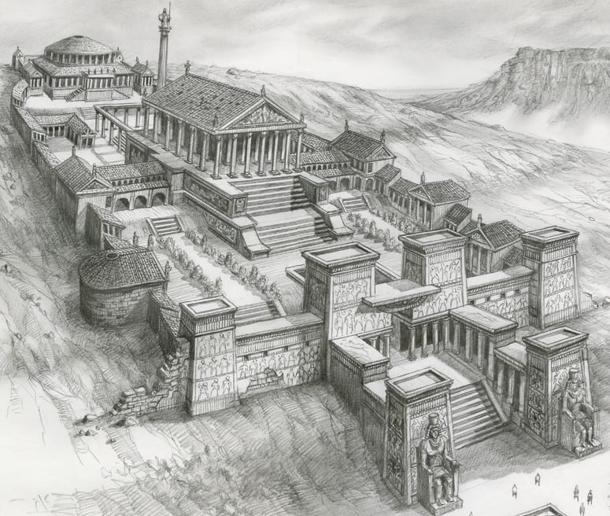
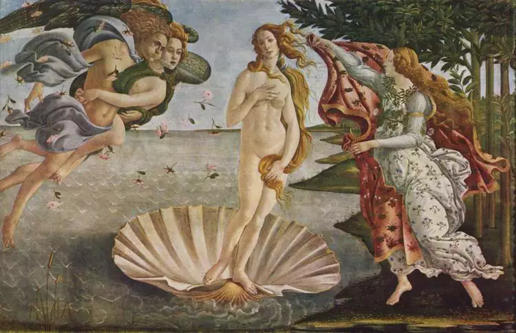

Como Surgiram os Museus?
O conceito atual que temos por museu é o de um determinado local onde se expõe ao público, de modo ordenada e selecionada, coleções de objetos científicos, históricos, arqueológicos, etnográficos, de artes, entre outros. Tais exposições teriam um caráter unicamente de estudo dessas coleções. Todavia, é interessante que façamos uma referência dos museus através da História, como forma de compreender a sua evolução e os paradigmas que tal fenômeno atravessou.
A ideia e o entendimento recorrentes do que pode ser um museu estão intrinsecamente associados à sua cadeia operatória, compreendida na conjunção da tríade objeto, coleção e exposição.
O Fenômeno Museu da Mesopotâmia
O homem desde a Pré-história reunia e produzia artefatos de acordo com as suas necessidades e associações pessoais ou coletivas. Tais indícios foram percebidos em escavações arqueológicas junto às câmaras funerárias daquele período. Já no século II a.C. há sinais, na Mesopotâmia, do surgimento de locais que abrigavam cópias de antigas inscrições, reproduzidas para uso educativo nas escolas daquele tempo
O Fenômeno Museu no Egito
No Egito, tesouros acumulados pelos Faraós eram depositados em suas câmaras mortuárias, cuja crença é a de que serviriam para acompanhá- los durante a sua passagem à eternidade. Muitos desses tesouros, hoje, tornaram-se acessíveis em coleções egípcias de diversos museus. Os egípcios também manifestaram a posse de objetos, reunidos com a finalidade de se tornarem um espaço de estudo, discutindo saberes mitológicos, religiosos, geográficos, etc.
O Fenômeno Museu na Grécia
O museu tem o seu sentido de gênese no mouseion grego, termo usado antes do século V a.C.; local destinado às ‘musas’ e que na mitologia grega eram as nove filhas de Zeus com Mnemosine, a divindade da memória. O mouseion era uma mistura de templo e instituição de pesquisa, voltado, sobretudo para o saber filosófico; local privilegiado, onde a mente repousava e onde o pensamento profundo e criativo, liberto dos problemas e aflições cotidianas, poderia se dedicar às artes e às ciências. As obras expostas no mouseion existiam mais em função de agradar as divindades do que para serem contempladas pelo homem.
Ao lado do mouseion encontravam-se espaços denominados thesaurus, onde se abrigavam ex-votos que eram trazidos em devoção às divindades. O museu teve na Grécia Antiga a sua origem, onde núcleos museológicos foram construídos para abrigar os tesouros dos templos, devido o acúmulo de ex-votos. Os tesouros eram, então, analisados pelos sacerdotes, que realizavam a triagem, a classificação, o controle e a segurança desses objetos.
O Fenômeno Museu em Roma
Em Roma ocorreu o mesmo que na Grécia Antiga, porém não exclusivamente nos templos. Os objetos eram depositados nos fóruns, jardins, banhos públicos e nos teatros. As famílias também adquiriam e conservavam em suas casas quadros e estátuas que resultavam em valiosas coleções.
Surge o Primeiro Museu: a Biblioteca de Alexandria
Em Alexandria, durante o século II a.C., o termo mouseion foi utilizado pela primeira vez para denominar um espaço destinado ao saber enciclopédico. Os objetos artísticos e as obras de arte eram recolhidas em templos, santuários e tumbas. O local era, sobretudo, um espaço para a discussão e o ensinamento do saber nos campos da religião, mitologia, astronomia, filosofia, medicina, zoologia, geografia e demais áreas do conhecimento que se tinham à época, configurando-se, numa compilação entre as áreas do conhecimento.
Tratava-se de um edifício consagrado às musas e por onde circulavam os mais distintos artistas, sábios e filósofos. Era neste museu que se localizava a famosa Biblioteca de Alexandria e que posteriormente foi incendiada. O mouseion de Alexandria foi, nesse âmbito, o protótipo do museu da Antiguidade e o reflexo de uma filosofia universalista, conjugando e superpondo as funções e a estreita união entre arquivo, biblioteca e museu.
Para saber mais sobre a Antiga Biblioteca de Alexandria clique aqui! O Fenômeno Museu na Idade Média: as Coleções Eclesiásticas
Durante a Idade Média as igrejas e catedrais se converteram em autênticos museus, onde se depositavam manuscritos, estátuas, joias e relíquias sagradas. Cada igreja, apesar de ser um lugar de culto, oferecia assim ao olhar do público uma quantidade de objetos, que configuravam verdadeiras coleções empregando os objetos com uma intenção pedagógica e um caráter moral. É durante esse período que a Igreja financia artistas para a confecção de obras de arte e que ainda hoje configuram em grandes obras-primas da humanidade.
O Renascimento e a Formação das Coleções Principescas
Durante o Renascimento, surgiram coleções privadas – denominadas por coleções reais e principescas – como forma de demonstração de requinte e símbolo de poder econômico das famílias principescas, servindo como verdadeiro termômetro das rivalidades entre elas. O colecionismo tornou-se moda em toda a Europa.
Foi durante o período do Renascimento que o conceito de museu começou a mudar. O redescobrimento das culturas clássicas grega e romana se configurou numa nova dimensão ao colecionismo de objetos de arte. Importantes coleções desta época foram as dos Médici, família nobre italiana, que financiava importantes obras e artistas. Contratado pelos Médici, o artista e arquiteto Vasari introduziu o novo conceito de museu, enquanto local de caráter científico que até hoje possue, propondo estudos sistemáticos e estilos e de artistas. Vasari foi o arquiteto responsável pelo projeto da Galeria de Uffizi (galeria de ofícios) – um dos mais antigos e famosos museus do mundo.
Dividido em várias salas disponíveis para escolas e estilos em ordem cronológica, a Galeria de Uffizi reúne obras do século XII ao século XVIII, considerada a melhor coleção do mundo de obras do Renascimento. Artistas como Cimabue, Caravaggio, Leonardo da Vinci, Michelangelo, Rafael, Andrea Mantegna, Ticiano, Parmigianino, Peter Paul Rubens, Rembrandt, Giovanni Battista Pittoni, Canaletto e Sandro Botticelli.
Fases do Renascimento - Artes Enem | Educa Mais Brasil Os Gabinetes de Curiosidades
Ainda no período do Renascimento, apareceram pela Europa os Gabinetes de Curiosidades e as coleções científicas – coleções altamente heterogêneas e assistemáticas formadas por estudiosos que buscavam simular a natureza em gabinetes, reunindo grande quantidade de espécies de variadas naturezas e procedências. De maneira geral, esses gabinetes eram uma exposição de curiosidades e achados oriundos de novas explorações ou instrumentos tecnicamente avançados; em outros casos eram amostras de quadros e pinturas. Pode-se dizer que, seriam eles os precursores dos atuais museus, uma vez que a partir deles se organizavam coleções de objetos raros ou estranhos dos três ramos da biologia considerados na época: animalia, vegetalia e mineralia; além das realizações humanas.
Entretanto, na sua origem, assim como as coleções principescas, os Gabinetes de Curiosidades também estavam fechados ao público, restritos à fruição exclusiva de seus proprietários e de pessoas que lhes eram próximas.
Museu, Museologia e Museografia | Tríscele Web e Museologia
As Primeiras Coleções Públicas
Na metade do Século XVIII surgiram as primeiras coleções públicas, onde várias coleções privadas passaram às mãos dos Estados. O governo francês começou a admitir que o público visitasse uma coleção de aproximadamente 100 quadros expostos nos Palácio de Luxemburgo, em Paris.
Gradativamente, entre os séculos XVIII e XIX os Gabinetes de Curiosidades foram desaparecendo, sendo substituídos por instituições oficiais e coleções privadas. Os objetos que eram considerados mais interessantes foram transferidos para museus de artes e de história natural que começavam a ser fundados, viabilizando o acesso do público às coleções, anteriormente reservadas a poucos, e marcando o surgimento dos grandes museus nacionais.
O Nascimento do Museu Moderno
O museu moderno adquiriu distintas funções, além de colecionar. Além de reconhecer e ordená-las, o museu moderno visava a sua classificação, manutenção, e restauração. Também promovia pesquisas.
Um exemplo é o Museu Britânico, em Londres (1753), originado a partir de doação particular à nação e que desde o seu início esteve aberto à visitação, porém, mediante pagamento de ingresso, com ressalvas e restrições. Ainda durante esse período foram estabelecidas as primeiras sociedades científicas, impulsionadas pelo pensamento enciclopédico que emergia na Europa. Os museus que surgiam tinham, portanto, um caráter enciclopedista, classificatório e evolucionista, localizando-se nos centros das grandes metrópoles coloniais.
O Museu no Novo Mundo: o Modelo Estadunidense
Nos Estados Unidos grande maioria das instituições já nasceu voltada ao público e o fenômeno museu se iniciou de forma bastante diversa e encontrou no mecenato o fomento para consolidar as suas coleções. O mecenato é uma característica ligada à história dos museus norte-americanos. Tratava-se de um incentivo à vulgarização das ciências. Um exemplo desse universo é o Smithsonian Institution (1846), em Washington, um legado do inglês James Smithson, que hoje ostenta o título de maior complexo museológico e de pesquisa do mundo, com dezenove museus e nove centros de pesquisa.
Foi no modelo de museu estadunidense que novas abordagens de se expor e organizar os acervos surgiu, a exemplo da exibição de animais em imitações de seus habitats naturais – os dioramas, uma recriação artificial de ambientes. Muitos museus fazem uso da técnica para demonstrar ecossistemas inteiros, ou parte de paisagens importantes historicamente. Um exemplo é o Museu de História Natural de Nova Iorque, o qual usa abundantemente o recurso.
T-Rex no Museu Americano de História Natural em Nova York – Qualquer viagem. Eu vou!
As Primeiras Experiências no Brasil
No Brasil uma das primeiras experiências de instituição museológica que se tem conhecimento data do século XVII, em Pernambuco, com as coleções de Maurício de Nassau, do Palácio de Vrijburg. Já no século XVIII surgem os jardins botânicos e o gabinete de história natural de Francisco Xavier Cardoso Silveira, a Casa dos Pássaros, no Rio de Janeiro, que taxidermizava animais da fauna brasileira, reunindo coleções, que se destinavam à Europa como mostruário do exotismo tropical que se criara no imaginário daquele continente.
Posteriormente a Casa dos Pássaros se transformou no Museu Real, ou Museu Nacional (1818) – nosso primeiro museu de caráter científico, criado por iniciativa de D. João VI, a partir da vinda da família real ao Brasil, que representou a introdução dos modelos institucionais europeus. Junto com a família real vieram coleções que originariam, um século mais tarde, o Museu Nacional de Belas Artes, no Rio de Janeiro (1937).
Outros importantes museus surgiram no Brasil, ainda durante esse período, com destaque a dois etnográficos: o Paraense Emílio Goeldi, no Pará (1866) e o Museu Paulista, em São Paulo (1894). ode-se dizer que os primeiros museus brasileiros configuravam, em sua equivalência, aos museus europeus de caráter enciclopédicos, e tinham como ponto de partida para a formação de suas coleções a combinação de elementos das ciências humanas e naturais, como forma de buscar uma compreensão sobre as origens do homem brasileiro.
O Museu Histórico Nacional
Somente a partir de 1922 o Brasil adquiriria uma instituição de caráter nacionalista, rompendo com a tradição enciclopédica até então vigente. O Museu Histórico Nacional era consagrado à história, à pátria, destinado a formular, por meio da cultura material, uma representação de nacionalidade, construindo um discurso positivista da nação. Os objetos do seu acervo eram denunciantes documentais da gênese e da evolução da nação brasileira. O modelo serviu como catalisador para as demais instituições museológicas que se seguiram por todo o país. Importante observar que com o surgimento do Museu Histórico Nacional sentiu-se a necessidade da qualificação de mão-de-obra para os museus, instituindo-se assim, o primeiro curso de museus (1932) naquele local, o primeiro curso de Museologia do país.
Os Museus do Brasil: Século XX
Foi durante esse período que ocorreram significativas democratizações dos museus. A política pública assumiu dois modelos distintos que atingiram diretamente os museus: especialmente na primeira metade, experiências totalitárias buscaram uma tutela controladora da criação artística; por outro lado, na segunda metade, houve fortes intervenções do estado em busca da democratização. Esse fenômeno ocorrido nos museus foi marcado por um grande crescimento, não somente no que diz respeito ao volume e diversidade de públicos, mas também marca o surgimento de diferentes modelos e iniciativas institucionais. Entre 1937 e 1945, na Era Vargas, o Estado Novo atuou numa forte política de criação de museus nacionais consolidando a intervenção estatal na área da cultura.
Foi também a partir de 1937, com a criação do Serviço do Patrimônio Histórico e Artístico Nacional (SPHAN), que o Brasil teve um marco no processo da institucionalização de uma política para o patrimônio cultural no país e que representou um momento de preservação do patrimônio nacional, associada à construção de uma nacionalidade. Foi durante a atuação do SPHAN que surgiram o Museu Nacional de Belas Artes, no Rio de Janeiro (1937), o Museu da Inconfidência, em Minas Gerais (1938); o Museu das Missões, no Rio Grande do Sul (1940).
O Surgimento do IPHAN: 1970
A partir dos anos sessenta intensificaram-se as críticas ante a atuação do SPHAN, que era visto por muitos como sectário e elitista, acusado inclusive, de favorecimento das minorias da sociedade brasileira em detrimento ao apelo popular e multicultural que o país apresentava. Em 1970 passou a se denominar Instituto do Patrimônio Histórico e Artístico Nacional (IPHAN) e desde então, atua junto à sociedade em prol da preservação e disseminação do patrimônio material e imaterial brasileiro.
Políticas Públicas Para Museus: o Departamento de Museus e o IBRAM
No ano de 2003, com a criação do Departamento de Museus (DEMU) e da Política Nacional de Museus (PNM) os museus e centros culturais brasileiros conquistariam a condição de política pública, cujo principal objetivo consistia em promover a valorização, a preservação e a fruição do patrimônio museológico brasileiro a partir da sua diversidade cultural e, com isso, viabilizava-se o desenvolvimento e a revitalização das instituições museológicas. Três anos mais tarde, em 2006, criava-se o Instituto Brasileiro de Museus (IBRAM), uma autarquia federal vinculada ao Ministério da Cultura, que se responsabilizaria a partir daquele momento até os dias atuais, pela elaboração de políticas para o desenvolvimento do setor museológico.
História do Museu Nacional - Diário do Rio de Janeiro